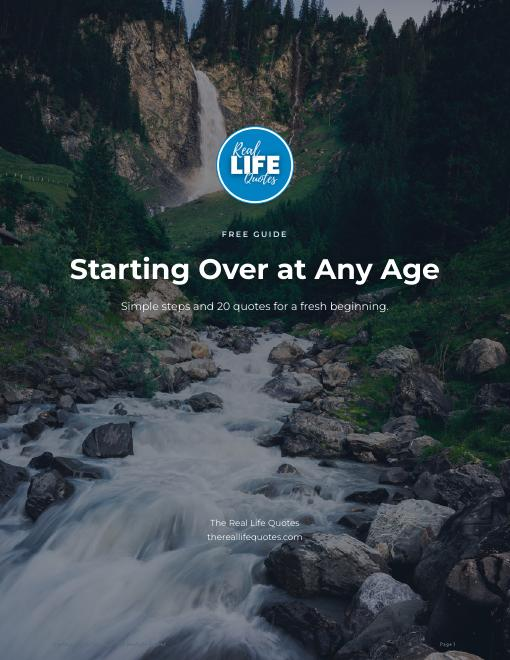

Free guide · 10 pages
Starting Over at Any Age
You are not too old, too late or too tired. Five honest steps and twenty quotes to help you begin again, at your own pace.
Why download it
- Know your next small step, even when you feel stuck.
- Stop comparing yourself. Start from what you already have.
- Twenty quotes to come back to on the hard days.
- A gentle 30-day plan, one week at a time.
What is inside
- Five clear steps, from saying what is ending to choosing your support
- Twenty quotes for a fresh beginning
- Your first 30 days, week by week
- A looking-back page to see how far you came
Get it free, plus 3 more
One signup unlocks all 4 free guides. No spam, and you can unsubscribe at any time.